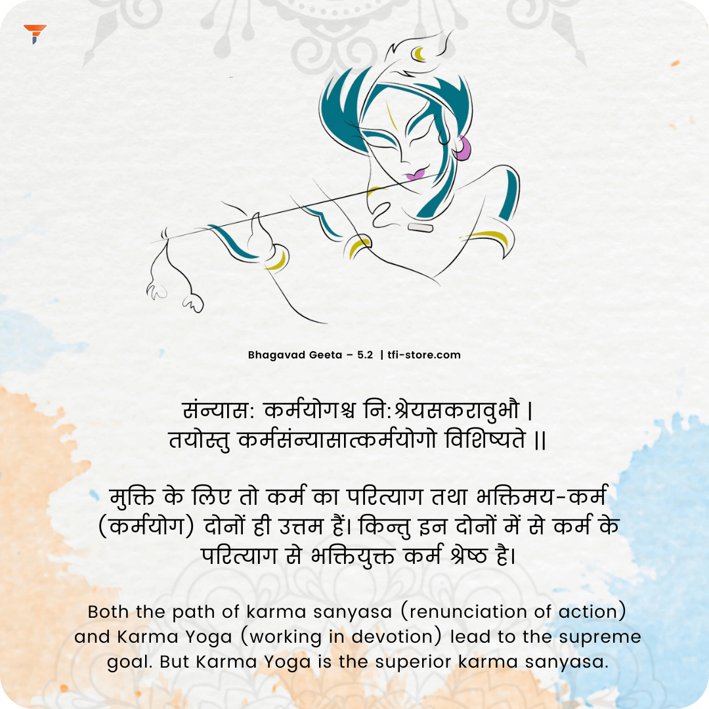
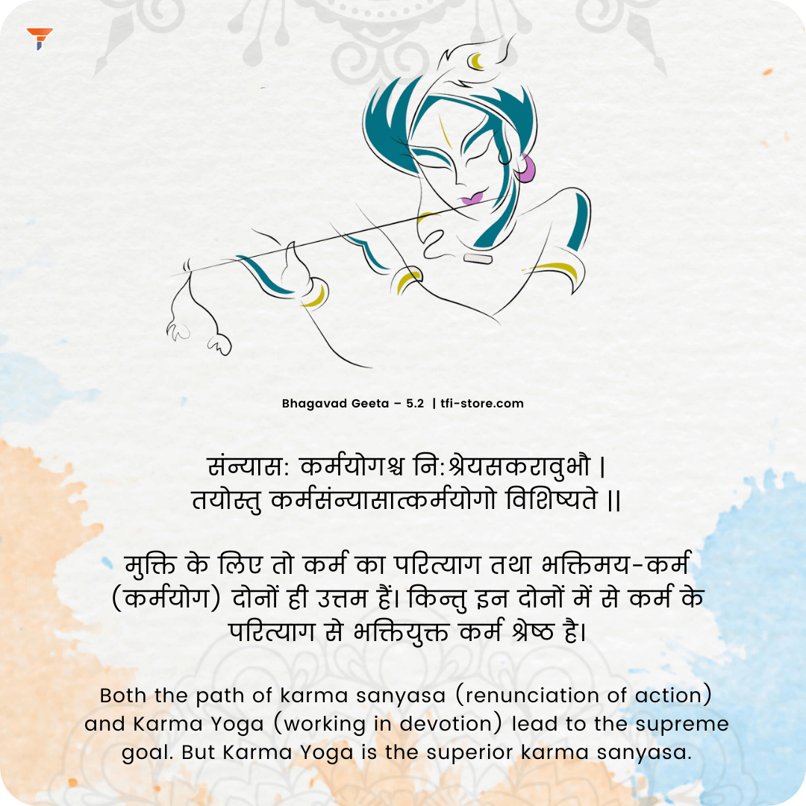
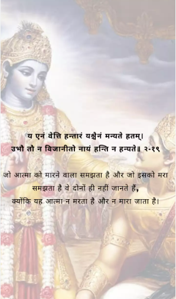
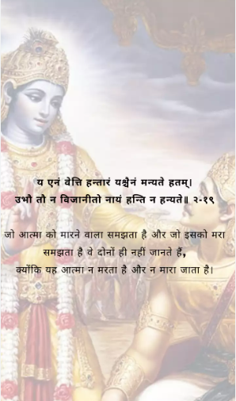

8 Life Lessons & Bhagavad Gita
- Why Worry? Be Happy. Learn to take life as it comes. Learn to get over it. Whatever you are moping about, just forget about it. A job interview that did not go as planned or the relationship you were hoping, but it did not work out. You need to take things in your stride. Let go and have faith that everything happens for a reason. You cannot control the past nor can you control the future. You only have the present so learn to live it up to the fullest.
- ‘Karm Karo, phal ki chinta mat karo.’ - Today, people are working for a bigger house, a fancy car, and the list is endless. We do everything keeping the ‘end result’ in mind. When the ‘end result’ is not as per our expectation we suffer. Keep it simple. Only work is in our hands.
- The only thing constant in life is “Change” - Today you might be rich and famous. Tomorrow fame and fortunate both might be gone. Accept both situations with equanimity. Season changes, people change, day follows night, etc. Learn the lesson of change from Mother Nature. Changes in life make you resilience and show you how to be tenacious.
- The body is temporary & Soul is permanent - The soul does not die. Fear of death and worry kills’ ambition and chances of progress diminish. Be fearless body dies and not the soul. You must strive to eradicate the fear from your mind. Fear is a deterrent to your well-being.
- We came alone into this world empty-handed, and we will go alone from this world empty-handed. - Not even your phone will accompany you! Attachment or Raga to materialistic possessions is futile. These days we do not possess things, but things have started to ‘possess our life.’ Yes, checking up on life and relations on WhatsApp DP? Put the phone down today and say hello in person.
- Kama, Krodha and Lobha (Lust, Anger, and Greed):-
- Kama - Eating, sleeping, or cravings, etc. too much or too little, is not going to bring you any closer to the higher reality. Be temperate in your approach, eat and sleep well, and find time for recreational activities too!
- Krodha - Anger makes you lose your balanced point of view. Reasoning with such a state of mind is not possible. In such a state, you cannot reason justly and thus are destined to be doomed. Anger element is the fundamental cause of failures in a person’s life.
- Lobha - Greedy and Selfish attitude is like a dusty mirror. A greedy person will fail to perceive the truth when tackling any given situation. A lop-sided view will keep him bounded with doubts and disappointments. Contentment with what you have is essential. First, be happy and satisfied, and then work for your needs.
- Doubting mind achieves nothing - Doubting the ‘absolute truth’ or a greater force at work is the main reason why many people lead unhappy lives. According to Bhagavad Gita, a doubtful mind will not be at peace either in this world or the next. Have faith. Faith brings in positive energy and momentum.
- Mind Matters - Your thoughts can either make you or break you. If you can think it, you can achieve it. When your mind is in a positive frame before any exam or presentation, the chances are brighter you will do better.

 


 
